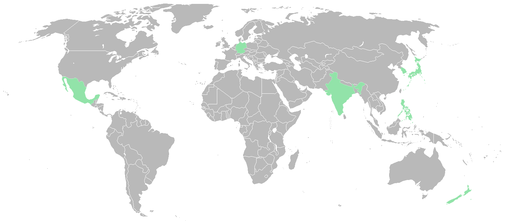

I think every single one of us dreamed of traveling to different various places and experience a different culture, tradition, taste new food, meet various people. And on this page, I will show you my top countries/places that I have been dreaming of traveling to in the future, and hopefully, who knows, it will come true right?
PHILIPPINES
PHILIPPINES - My own country. I never really get to travel at all aside from going between where I live (Manila) and my province (Nueva Ecija). So I sencerely hope that one day, I will be able to explore my own country. Not just go to tourist spots etc. but to actually tavel and experience what it's really like to be in various parts of our country.
JAPAN
JAPAN - LAND OF THE WEEBS! My Number 1 Dream Country to visit oneday. Not just a diversity in the beauty of it's places, but above all, the beauty in its culture and tradition had enticed me so much that it shaped me growing up.
INDIA
INDIA - The one country I'm most curious about. I don't really know much about this country aside from the common facts that it's the next most densely pack country next to China and that (in my perception) it is the Land of Spices. From the few videos I've seen, it's a palce with a very rich culture and tradition, appealing enough for me to make me want to visit it someday.
MEXICO
MEXICO - I don't really know much about this place, but when it comes to talking about traveling to North or South America, the one country I always thought of is not The U.S. nor Canada, but Mexico. It's a very controversial country due to its history but from what I've seen in the few videos I've watch, it's full of good people, spicy foods, and tacos.
GERMANY
GERMANY - This country is very fascinating for me. When I was growing up, I love watching documentaries on two topics: Technology and History. World Wars are very fascinating for me and learning the various events and stories that happened. In the center of that story, probably the most famous country, more than the US or UK, is Germany. I want to experience what it's like in this country nowadays, after being antagonized by the world for so long.
NEW ZEALAND
NEW ZEALAND - Probably the country I know least about. The reason I want t go here is because of the image the news media had portrait it to be. A very peaceful country yet leading in all things right.
KOREA
KOREA - In my mind, this is the one asian country that is somewhat close to Japan. By that I don't mean just geographically close, but instead, the feal of culture and tradition. Tho in my totally biased opinion, it's not as rich as Japan, it is an incredible country nontheless and definitely up there in my travel goals.
SPACE!
Since this isn't on the Map, let me tell you right now that I want to go to space! Doesn't everyone dreamed of doing so when they were a kid? Well I grew up and still dreaming of it even now! Fortunately, private commercial flights are going full speed in since the past two years and this year alone, multiple civilians have already reached space. This means that space travel will only continue to be more viable in the next several or even just couple of years. So ofcourse, in the future, I will want to travel to it aswell :)
NOTE: Click the colored places to reveal what country it is and the reason as to why I really want to visit the place.
